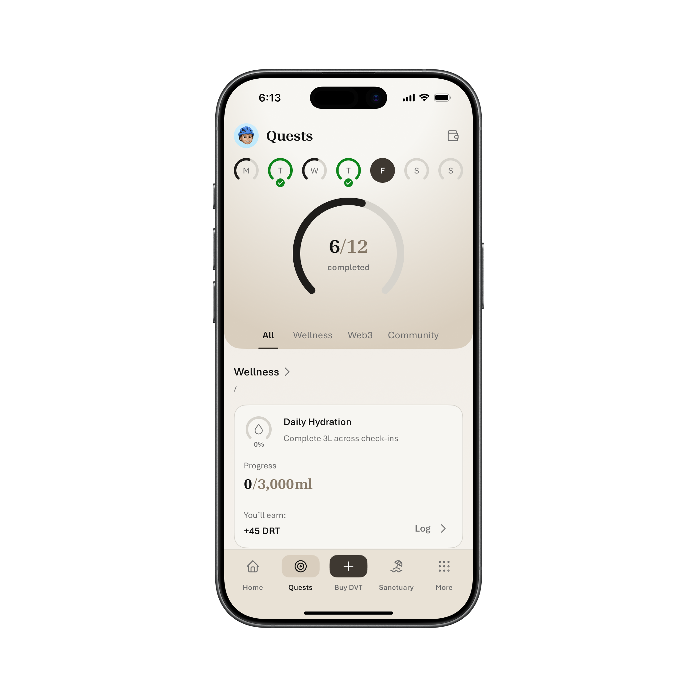
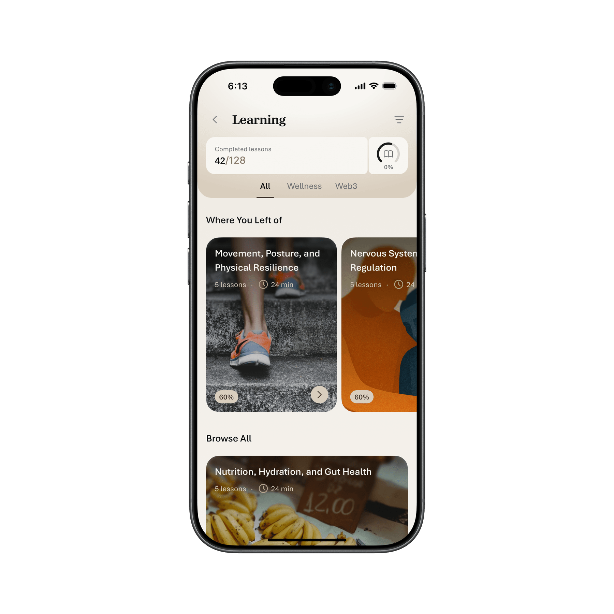
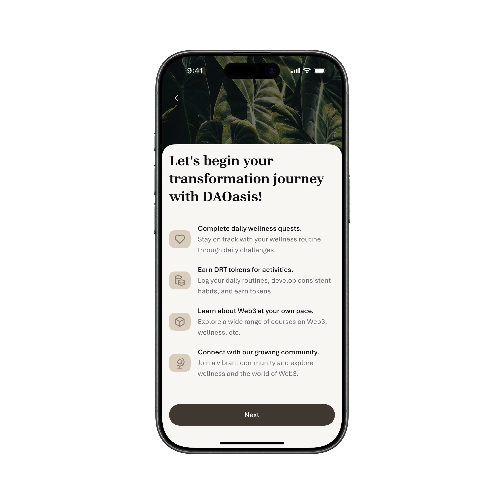
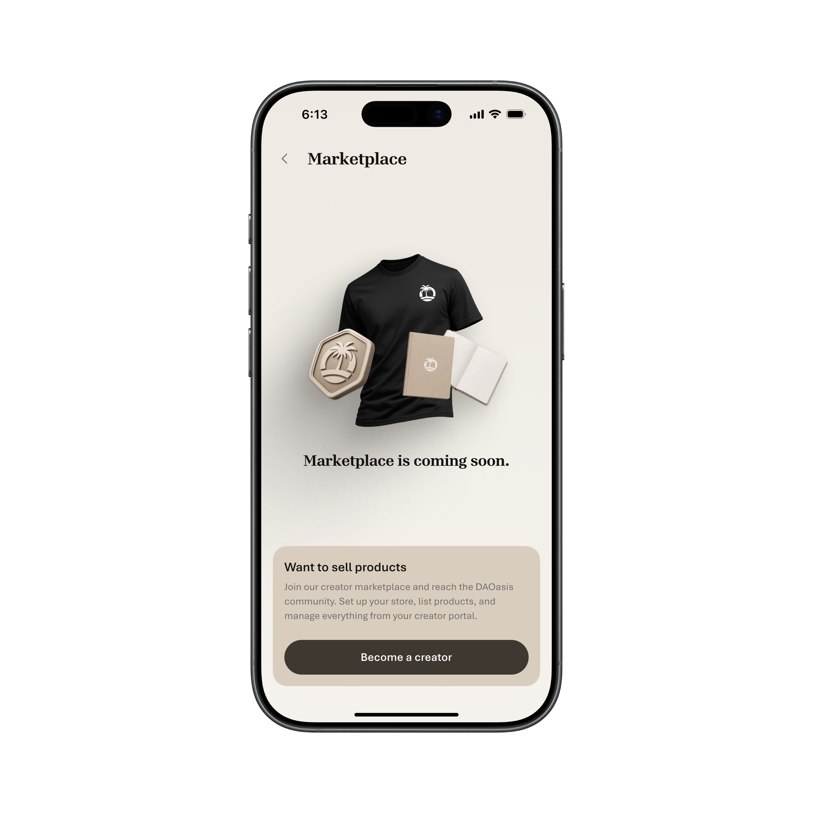

DAOasis connects your daily progress, learning and contribution to an ecosystem designed around long term participation.



You show up. You learn. You move. You build. You contribute. DAOasis recognises meaningful participation and gives it somewhere to go — and all of it begins in the Companion App.
DRC — DAOasis Reward Credits — is the everyday recognition layer inside DAOasis.
Meaningful activity across the ecosystem earns Reward Credits. They are a record of engagement, designed to sit close to the experience rather than apart from it.
The two layers do different jobs. DRC recognises what you have already done, inside DAOasis. $DVT is the on-chain layer that opens up deeper participation across the wider ecosystem. Reward Credits are designed as a record of participation, not as something to speculate on.
DRC can be converted into $DVT, creating a pathway from everyday participation into deeper ecosystem utility. Conversion is a step you choose to take — not a requirement for using DAOasis.
The distinction matters. DRC keeps the everyday experience simple — you can take part in DAOasis without ever thinking about a token. $DVT is what becomes available when you want to go further.
$DVT is the on-chain token that connects deeper participation with the wider DAOasis ecosystem. Here is what it is designed to do.
Use $DVT within the DAOasis marketplace for eligible products, experiences and ecosystem offerings — the place where value built inside the app is spent in the real world.
The marketplace is in developmentParticipate in decisions that shape the development of DAOasis as the governance system evolves. Consistent participation is what earns a voice, rather than the size of a balance alone.
Governance is being introduced in stagesStake $DVT as part of longer term ecosystem alignment and participation — a way of signalling that you are here for the long version of this, not the short one.
Mechanics in design · no returns are promisedUse $DVT to take part in the DAOasis creator economy and bring approved contributions into the ecosystem — content, products, events, education and community initiatives.
Approved contributions onlyUse your position within the ecosystem to contribute to projects, initiatives, partnerships and the wider DAOasis community. The people who build this are the people who use it.
As the ecosystem developsThe token is not the product. It is the infrastructure running underneath one connected system — the same journey, from the app in your pocket to a place you can actually walk into.
Each part is useful on its own. Together they are the reason any of it holds: the app builds the habit, participation is recognised, $DVT carries that recognition into the rest of the ecosystem, and the Sanctuary is where all of it becomes physical.

DAOasis is designed to give aligned members the ability to create within the ecosystem, not only to consume it.
Stake to Create connects $DVT with creator participation — putting your position behind something you want to bring into DAOasis, and being accountable for it.
DAOasis isn't only something you use — it is something you can help build

It starts where everything else on this page starts — with what you actually do, day to day.
Participation turns into standing. The members holding the ecosystem up are the ones it should listen to.
As governance develops, members can take part in the decisions that set the direction of DAOasis.
Governance is being introduced in stages rather than switched on at once. What is described here is the direction of travel, and the detail will be published as each part is implemented.
The Sanctuary is the physical expression of DAOasis. The app carries the practice before and after it. The Web3 layer is the infrastructure underneath — participation, alignment and contribution, running the whole way through.
DAOasis recognises participation through DRC and builds a pathway from that recognition toward digital ownership through $DVT. That is the part being built now.
Your wellness journey generates information. As DAOasis infrastructure evolves, we are exploring ways to give individuals greater control over verified achievements, credentials and personal wellness information.
Your progress should belong to you.
This section describes a direction, not a feature. DAOasis does not store health data on a blockchain, and nothing described here is available today. Digital sovereignty is a principle we are designing toward, and anything built on it will be published clearly when it exists.
Participation creates value. Value enables contribution. Contribution strengthens the ecosystem. A stronger ecosystem gives people more reason to participate.
The mechanics should be understandable without a glossary. If part of this page needed one, it isn't finished.
The token exists to support real participation in the ecosystem — not to be the reason the ecosystem exists.
The system is designed around long term contribution rather than short term speculation.
DRC stands for DAOasis Reward Credits. They are the recognition layer inside DAOasis: complete a quest, finish a lesson, hold a routine or take part in the community, and that participation is recognised as Reward Credits.
DRC is designed as a record of what you have done inside DAOasis, not as something to speculate on.
$DVT is the DAOasis Value Token — the on-chain layer of the ecosystem. It connects deeper participation to marketplace participation, governance, staking, Stake to Create and contribution to DAOasis itself.
DRC recognises participation as it happens. Over time, accumulated DRC can be converted into $DVT.
One is the everyday record inside the app. The other is what opens up the wider ecosystem. Converting is a step you choose to take, not a requirement.
No. You can start in the Companion App, build habits, complete quests, learn and earn DRC without one. A wallet only becomes relevant if and when you move into the $DVT layer.
Yes. The Web3 layer sits behind the experience rather than in front of it. Nothing about walking, sleeping, learning or completing a quest requires you to understand a blockchain.
If you want to understand it, the app includes a Web3 learning track alongside the wellness one — and that learning earns Reward Credits too.
$DVT is designed for marketplace participation, governance, staking, Stake to Create, and contributing to the projects and initiatives that make up DAOasis.
Several of these are still being built. Where that is the case, this page says so rather than describing them as though they are live.
Stake to Create connects $DVT with creator participation. Members can use their position within the ecosystem to bring approved contributions into it — content, products, events, education and community initiatives.
It is the difference between using DAOasis and helping build it.
No. DAOasis is a wellness and accountability ecosystem. $DVT exists to support participation and utility within it.
Nothing on this page is financial advice, no return is promised or implied, and $DVT is not presented as a store of value.
Today, information you generate in the app is handled by the DAOasis platform under its privacy policy.
Longer term, we are exploring how individuals could hold greater control over verified achievements, credentials and personal wellness information. That is a direction we are designing toward — DAOasis does not store health data on a blockchain.
Where something is still in development, this page says so. As each part of the Web3 layer is implemented, the detail will be published rather than described in advance.
DAOasis begins with participation. The rest unfolds over time.